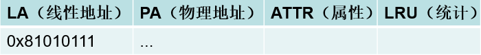
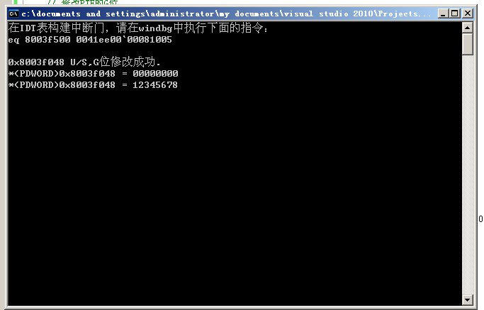
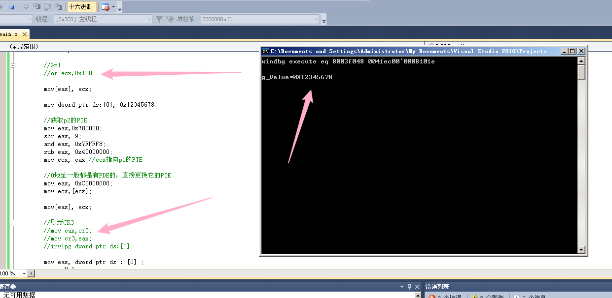
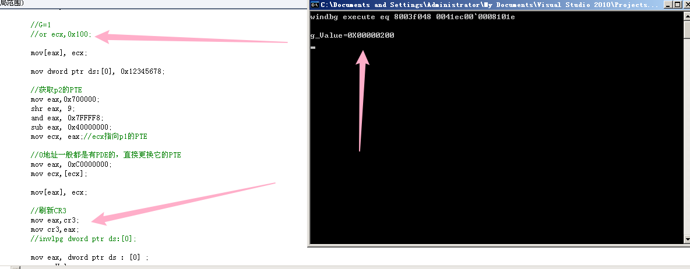
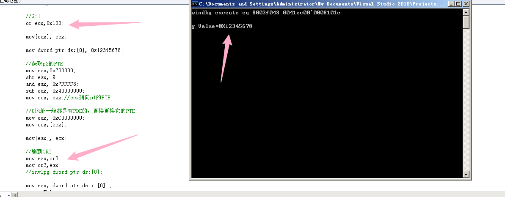
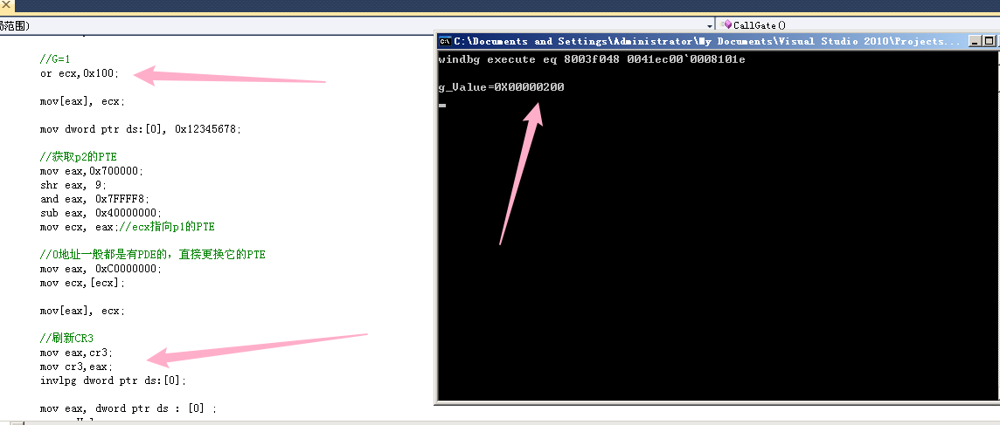

# 地址解析
当我们通过一个线性地址访问一个物理页（比如：MOV EAX,[0x12345678]）时，实际上 CPU 未必只读了 4 个字节。
- 10-10-12 分页
CPU 先通过线性地址找到对应的 PDE：4 个字节
CPU 再通过 PDE 和线性地址找到 PTE：4 个字节
最后再通过 PTE 找到对应物理页：4 个字节
一共访问了 12 个字节，如果跨页可能更多。
- 2-9-9-12 分页
找到 PDPTE：8 个字节
找到 PDE：8 个字节
找到 PTE：8 个字节
最后找到物理页：4 个字节
一共访问了 20 个字节，如果跨页可能更多。
为了提高访问效率，只能对线性地址与其对应的物理地址做记录。
CPU 内部做了一张表，用来记录这些东西。它的效率和寄存器一样快，名字叫做 TLB（Translation Lookaside Buffer）。
由于 TLB 的效率很快，因此它的大小不能太大，少则几十条，多则也只有上百条。
思考：在一个进程的 4GB 空间中，有无数个线性地址，但是一个 TLB 最多只能记录上百条记录，那么这张表真的有意义吗？
# TLB
# TLB 结构

ATTR： 属性
在 10-10-12 分页模式下：ATTR = PDE 属性 & PTE 属性
在 2-9-9-12 分页模式下：ATTR = PDPTE 属性 & PDE 属性 & PTE 属性
LRU： 统计信息
由于 TLB 的大小有限，因此当 TLB 被写满、又有新的地址即将写入时，TLB 就会根据统计信息来判断哪些地址是不常用的，从而将不常用的记录从 TLB 中移除。
注意：
不同的 CPU，TLB 大小不同
只要 Cr3 发生变化，TLB 立即刷新，一核一套 TLB
由于操作系统的高 2G 映射基本不变，因此如果 Cr3 改了，TLB 刷新的话，重建高 2G 以上很浪费。
所以 PDE 和 PTE 中有个 G 标志位（当 PDE 为大页时，G 标志位才起作用），如果 G 位为 1，刷新 TLB 时将不会刷新 PDE/PTE
G 位为 1 的页，当 TLB 写满时，CPU 根据统计信息将不常用的地址废弃，保留最常用的地址
# TLB 种类
TLB 在 X86 体系的 CPU 中的实际应用最早是从 Intel 的 486CPU 开始的，在 X86 体系的 CPU 中，一般都设有如下 4 组 TLB:
第一组：缓存一般页表（4K 字节页面）的指令页表缓存（Instruction-TLB）；
第二组：缓存一般页表（4K 字节页面）的数据页表缓存（Data-TLB）；
第三组：缓存大尺寸页表（2M/4M 字节页面）的指令页表缓存（Instruction-TLB）；
第四组：缓存大尺寸页表（2M/4M 字节页面）的数据页表缓存（Data-TLB）
# 全局页
G=1，即为全局页，进程（CR3）切换时，TLB 中的记录不会被刷新。
# 实验
# 编写代码实现修改页属性，实现应用层读写高 2G 内存地址
改 U/S 位，和 PTE 的 G 位
G=1 时，程序会崩，只有 G=0 才能成功。
简单解释一下 G 位：
PDE 中，只有 PS=1（大页）时，G 才有效。
G 位是全局页的意思，G=1 时，这个线性地址对应的页是全局页，进程切换时，对应的 TLB 不会改变。多个进程的高 2G 数据大部分都是相同的，我们不希望在切换进程时对这部分 TLB 做多余的刷新，所以需要设置 G=1 以提高效率。
回到本文，我们已经知道 PDE 的 PS=0，所以我们不用管 PDE 的 G。关键是 PTE 的 G，为什么要改成 0 呢？因为线性地址 0x8003f048 默认是 G=1，它在 CPU 中有 TLB 缓存。
2-9-9-12 模式下获取 PDPTI-PDI-PTI-OFFSET
公式：
pPDE = 0xc0600000 + (PDPTI*4KB) + (PDI*8)
pPTE = 0xc0000000 + (PDPTI*2MB) + (PDI*4KB) + (PTI*8)
更高效的公式（MmIsAddressValid 是这么干的）
pPDE = 0xc0600000 + ((addr >> 18) & 0x3ff8)
pPTE = 0xc0000000 + ((addr >> 9) & 0x7ffff8)
代码转自 https://blog.csdn.net/Kwansy/article/details/108965196
#include <stdio.h> | |
#include <windows.h> | |
//2-9-9-12 | |
//PDPTI-PDI-PTI-OFFSET | |
DWORD *GetPDE(DWORD addr) | |
{ | |
//return (DWORD *)(0xc0600000 + ((addr >> 18) & 0x3ff8)); | |
DWORD PDPTI = addr >> 30; | |
DWORD PDI = (addr >> 21) & 0x000001FF; | |
DWORD PTI = (addr >> 12) & 0x000001FF; | |
return (DWORD *)(0xC0600000 + PDPTI * 0x1000 + PDI * 8); | |
} | |
DWORD *GetPTE(DWORD addr) | |
{ | |
//return (DWORD *)(0xc0000000 + ((addr >> 9) & 0x7ffff8)); | |
DWORD PDPTI = addr >> 30; | |
DWORD PDI = (addr >> 21) & 0x000001FF; | |
DWORD PTI = (addr >> 12) & 0x000001FF; | |
return (DWORD *)(0xC0000000 + PDPTI * 0x200000 + PDI * 0x1000 + PTI * 8); | |
} | |
void __declspec(naked) R0Function() | |
{ | |
__asm | |
{ | |
push ebp | |
mov ebp,esp | |
sub esp,0x1000 | |
pushad | |
pushfd | |
} | |
__asm push fs | |
//__asm int 3 | |
// 修改 8003f048 的 U/S 位 | |
*GetPDE(0x8003f048) |= 0x00000004; | |
*GetPTE(0x8003f048) |= 0x00000004; | |
// 修改 PTE 的 G 位 | |
*GetPTE(0x8003f048) &= 0xFFFFFEFF; | |
//__asm int 3 | |
__asm pop fs | |
__asm | |
{ | |
popfd | |
popad | |
add esp,0x1000 | |
mov esp,ebp | |
pop ebp | |
iretd | |
} | |
} | |
int main(int argc, char* argv[]) | |
{ | |
printf("在IDT表构建中断门，请在windbg中执行下面的指令：\n"); | |
printf("eq 8003f500 %04xee00`0008%04x\n",(DWORD)R0Function>>16,(DWORD)R0Function & 0x0000FFFF); | |
getchar(); | |
__asm int 0x20 | |
printf("0x8003f048 U/S,G位修改成功.\n"); | |
printf("*(PDWORD)0x8003f048 = %08x\n", *(PDWORD)0x8003f048); // 读 | |
*(PDWORD)0x8003f048 = 0x12345678; // 写 | |
printf("*(PDWORD)0x8003f048 = %08x\n", *(PDWORD)0x8003f048); // 读 | |
getchar(); | |
return 0; | |
} |
结果：

# 体验 TLB 的存在
火哥的思路是：
挂上物理页后，修改一下数据，再挂上另外一个物理页，然后在读取这个线性地址，查看数值是以前的还是后面挂上物理页的，由此推测 TLB 是否存在。
#include<stdio.h> | |
#include<Windows.h> | |
DWORD g_Value = 0; | |
//DWORD pPDE, pPTE; | |
void __declspec(naked) CallGate() { | |
__asm { | |
push 0x30; | |
pop fs; | |
pushad; | |
pushfd; | |
// 获取 p1 的 PTE | |
mov eax,0x600000; | |
shr eax, 9; | |
and eax, 0x7FFFF8; | |
sub eax, 0x40000000; | |
mov ecx, eax;//ecx 指向 p1 的 PTE | |
//0 地址一般都是有 PDE 的，直接更换它的 PTE | |
mov eax, 0xC0000000; | |
mov ecx,[ecx]; | |
//or ecx,0x100; | |
mov[eax], ecx; | |
mov dword ptr ds:[0], 0x12345678; | |
// 获取 p2 的 PTE | |
mov eax,0x700000; | |
shr eax, 9; | |
and eax, 0x7FFFF8; | |
sub eax, 0x40000000; | |
mov ecx, eax;//ecx 指向 p1 的 PTE | |
//0 地址一般都是有 PDE 的，直接更换它的 PTE | |
mov eax, 0xC0000000; | |
mov ecx,[ecx]; | |
mov[eax], ecx; | |
// 刷新 CR3 | |
//mov eax,cr3; | |
//mov cr3,eax; | |
//invlpg dword ptr ds:[0]; | |
mov eax, dword ptr ds : [0] ; | |
mov g_Value, eax; | |
popfd; | |
popad; | |
retf; | |
} | |
} | |
int main(int argc, char* argv[]) { | |
char buf[] = { 0,0,0,0,0x48,0 }; | |
void* p1 = VirtualAlloc(0x600000, 0x1000, MEM_COMMIT | MEM_RESERVE, PAGE_EXECUTE_READWRITE); | |
void* p2 = VirtualAlloc(0x700000, 0x1000, MEM_COMMIT | MEM_RESERVE, PAGE_EXECUTE_READWRITE); | |
if (p1 == NULL) { | |
if (p2 != NULL) VirtualFree(p2, 0x1000, MEM_COMMIT | MEM_RESERVE); | |
printf("virtual failed p1\n"); | |
return 0; | |
} | |
if (p2 == NULL) | |
{ | |
VirtualFree(p1, 0x1000, MEM_COMMIT | MEM_RESERVE); | |
printf("virtual failed p2\n"); | |
return 0; | |
} | |
*((DWORD*)p1) = 0x100; | |
*((DWORD*)p2) = 0x200; | |
printf("windbg execute eq 8003f048 %04xec00`0008%04x\n", ((unsigned int)CallGate >> 0x10) & 0xffff, (unsigned int)CallGate & 0xffff); | |
getchar(); | |
__asm { | |
call fword ptr buf; | |
push 0x3b; | |
pop fs; | |
}; | |
//printf("%#010X\n", pPDE); | |
//printf("%#010X\n", pPDE); | |
printf("g_Value=%#010X\n", g_Value); | |
getchar(); | |
VirtualFree(p1, 0x1000, MEM_COMMIT | MEM_RESERVE); | |
VirtualFree(p2, 0x1000, MEM_COMMIT | MEM_RESERVE); | |
return 0; | |
} |
or ecx,0x100 ecx 中存储的是 PDE，进行或运算，使 G 位为 1，即开起全局页，这样进程（CR3）切换时，TLB 中的记录不会被刷新
mov eax,cr3; mov cr3,eax; 刷新 CR3。
INVLPG: 使 TLB 数据失效。
这个指令与直接加载 CR3 的区别在于 CR3 是整个 TLB 都失效，并重新加载。
INVLPG 则是指定去失效某个页的 TLB。它是一个更细粒度的控制。
# 实验结果
- 不开启全局页，不刷新 CR3

- 不开启全局页，刷新 CR3

- 开启全局页，刷新 CR3

- 开启全局页，刷新 CR3，使用 INVLPG 指令

# ShadowWalker
一种利用 TLB 机制实现内存隐藏的方式 ——ShadowWalker。这种技术利用了 TLB 会缓存线性地址到物理地址映射的特性，当 CRC 线程检查某段代码时，它使用的线性地址会缓存到 TLB 的数据页表缓存（Data-TLB）中。而当 EIP 运行到这段代码时，又会把代码的线性地址缓存到 TLB 的指令页表缓存（Instruction-TLB）中。这样 CPU 中就缓存了同一个地址的两份记录，CRC 线程从数据页表缓存中读取物理地址，EIP 执行流从指令页表缓存中读取物理地址，这两个物理地址是相同的。
ShadowWalker 技术的核心就在于修改指令页表缓存中的物理地址，让 CRC 线程读取原来的代码，而程序真正执行的时候则跳转到其他代码。
这种方式在 3 环是不稳定的，原因是 TLB 经常刷新。
复现暂时先鸽了。
https://www.cnblogs.com/leibso-cy/p/11719281.html
# Reference
https://blog.csdn.net/qq_41988448/article/details/102736062
https://blog.csdn.net/Kwansy/article/details/108965196
https://blog.csdn.net/Kwansy/article/details/109013152